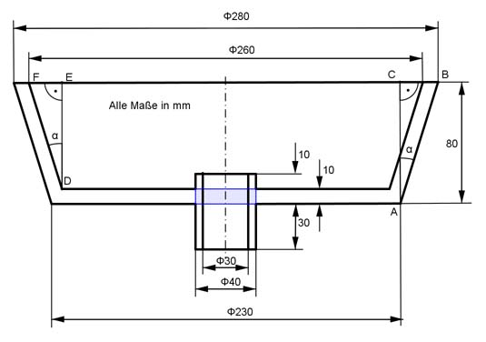

Aufgabe 293 Welche Masse m hat das Kupplungsteil bei einer Dichte von 7,2 g/cm³?  Volumen = = Kegelstumpf K1 - Kegelstumpf K2 - Zyinder Z1 + Zylinder Z2 - Zylinder Z3 л * h K1 = -------- * (r1² + r1 * r2 + r2²) 3 r1 = 280 mm/2 = 140 mm = 14 cm r2 = 230 mm/2 = 115 mm = 11,5 cm h = 80 mm = 8cm л * 8 K1 = -------- * (14² + 14 * 11,5 + 11,5²) cm³ 3 K1 = 4 097 cm³ Im Dreieck ABC gilt: BC = 280 mm/2 - 230 mm/2 = 140 mm - 115 mm = 25 mm BC 25 mm tan α = ---- = -------- = 0,3125 --> α = 17,35° AC 80 mm Im Dreieck DEF gilt: DE = 80 mm - 10 mm = 70 mm EF tan α = ---- | *DE DE EF = DE * tan α = 70 mm * tan 17,35° = 70 mm * 0,3125 = 21,875 mm л * h K2 = -------- * (r3² + r3 * r4 + r4²) 3 r3 = 260 mm/2 = 130 mm = 13 cm r4 = 260 mm/2 - 21,875 mm = 108,1 mm = 10,8 cm h = 70 mm = 7 cm л * 7 K2 = -------- * (13² + 13 * 10,8 + 10,8²) cm³ 3 K2 = 3 121 cm³ Blauer Zylinder Z1: r5 = 40 mm/2 = 20 mm = 2 cm h1 = 10 mm = 1 cm Z1 = л * r5² * h1 Z1 = л * 2² * 1 cm³ = 12,56 cm³ Z2: h2 = 50 mm = 5 cm Z2 = л * r5² * h2 Z2 = л * 2² * 5 cm³ = 62,8 cm³ Z3: r6 = 30 mm/2 = 15 mm = 1,5 cm Z3 = л * r6² * h2 Z3 = л * 1,5² * 5 cm³ = 35,3 cm³ V = 4 097 cm³ - 3 121 cm³ - 12,56 cm³ + 62,8 cm³ - 35,3 cm³ V = 990,9 cm³ m = V * ρ = 990,9 cm³ * 7,2 g/cm³ = 7 134 g